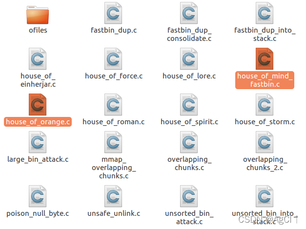
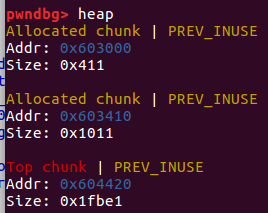
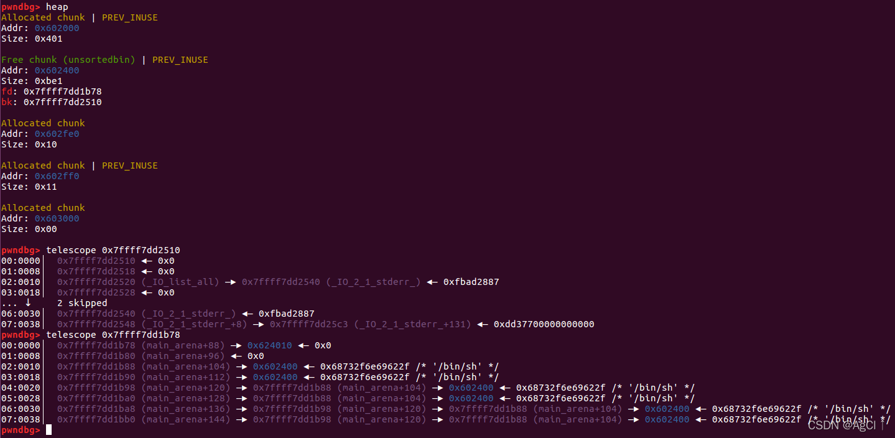

how2heap下载网址: 传送门
Glibc源码查看网址：传送门
参考书籍：CTF竞赛权威指南-pwn篇
测试环境：Ubuntu 16.04
Glibc版本：Ubuntu GLIBC 2.23-0ubuntu11.3
按照顺序，本文分析glibc 2_23文件夹中的第7~8个源码。这两种攻击方式初见比较绕人，也比较难，因此也花了不少时间消化与理解。

7. house_of_mind_fastbin
这是一种较为复杂，不太常见的堆漏洞。原文件中的解释翻译大致如下（英语水平有限，很多地方自己都看不懂…）：
这种攻击与传统的house of mind类似，后者使用一个假的非主线程所占有的arena来向一个新的地址写入。而前者使用的是fastbin作为写入的地址。
如果能够分配任意数量的chunk，且对于chunk的size域有一字节的溢出，我们就可以控制很多东西。
这可以被用来覆写一个已经被free的chunk到一个任意地址，或者可以在任意地址写入一个超大整数值。
chunks的size域中低3 bit存放的是控制信息，由低到高分别为prev_inuse、mmap、non_main arena。使用non_main arena是本攻击的重点。
首先，我们需要知道chunk是怎么知道自己不是主线程的arena。
下面是_heap_info结构体的声明：
1 | struct _heap_info |
这里有一个值得注意的点是arena中的malloc_state是通过ar_ptr获取的，这是该结构体的第一个元素。malloc_state == mstate == arena。
main arena有一个特殊的指针。但是，非main arenas在一个堆段的起始处。它们通过下面的代码获取，这里也是用户控制arena_for_chunk中ptr的地方。
1 |
这个宏获取了ptr然后减去了一个大数，因为heap_info应该在整个堆段的开头。那么通过使用这个，程序就可以找到需要使用的arena。
这个攻击的想法是使用一个假的arena来写一个指针到一个地址，这个地址在free掉fastbin时滥用了arena_for_chunk的功能。
这个攻击做了如下事情：
1. 找到一个可用的arena地址作为non_main arena的地址
2. 分配足够的chunk来到达这个non_main arena的位置，在那个位置我们可以控制arena控制字段的值
3. 创建一个假的_heap_info来指明之后要使用的at_ptr
4. 使用这个假的arena(ar_ptr)，我们使用fastbin，配合一个堆指针向一个ar_ptr不期望写入的地址写入。
进行这个攻击的前提条件：
1. 一个堆区地址的泄露，以知道假的_heap_info在什么地方（需要有可能避免特殊的喷射技术）
2. 无限制分配堆空间的能力
3. 一字节的溢出到下一个chunk的size处（需要能够放入fastbin中，因此如果有tcache需要首先填满tcache）
4. malloc state（ar_ptr）的地址需要是一个大于在malloc_state.system_mem中被free的fastbin大小的值，否则这个chunk会被认为无效（这可以通过排列值完成）
5. 下一个chunk，已经被free，必须有一个有效的size值（大于0x20且小于malloc_state.system_mem）
看完这一大段话我是一脸懵逼的，不知所云。程序中说的是产生一个constrained WRITE-WHERE primitive。算了，叫什么名词无所谓，看他是怎么玩的。
跟着程序单步走，在进入while循环之前栈的结构如下：
1 | 00:0000│ rsp 0x7fffffffe450 —▸ 0x7ffff7ffe168 ◂— 0x0 |
之后进入循环一直分配大小为MAX_SIZE==0x1FF00大小的chunk直到分配到的chunk的地址大于new_arena_value==0x4000000。然后malloc(0x50)，将上述stack中08:0040处赋值为fastbin chunk的值（测试为0x4028F50）。之后，程序对0x4000000处进行了写操作，这里是要作为假的arena，因此有：
1 | fake_heap_info[0] = (uint64_t) fake_arena; // Setting the fake ar_ptr (arena) |
将假_heap_info的第一个字段（ar_ptr）设置为假的arena所在处（0x603420）。调试显示，在没有攻击时，被攻击地址（0x603448）处的值为0，然后将那个最后分配的chunk的size中的non_main arena位修改为1。最后，将这个fastbin释放，然后就可以看到目标地址处被写入了fastbin的地址，成功将其修改为一个较大的值。
看到这里，已经大概明白了。实际上就是伪造一个malloc_state结构体在chunk中，然后欺骗free让它将bins链入这个假的arena中。因为malloc_state是arena所有控制字段以及bins的头指针所在的地方，具体定义如下：
1 | struct malloc_state |
这里需要注意为什么这个fastbin会修改到0x603448的值。查看mutex_t的定义知道这就是int类型，后面的flags也是一个int类型。紧随其后的fastbinsY是按照fastbin的大小链入的，从0x20大小开始。
| addr | 0x0 | 0x4 | 0x8 | 0xC |
| 0x603420 | mutex | flag | fastbinsY[0] (for chunk size=0x20) | |
| 0x603430 | fastbinsY[1] (for chunk size=0x30) | fastbinsY[2] (for chunk size=0x40) | ||
| 0x603440 | fastbinsY[3] (for chunk size=0x50) | fastbinsY[4] (for chunk size=0x60) | ||
| ...... | ...... | ...... | ||
由于释放的chunk大小为0x60，因此它被链入fastbinsY[4]的开头，而fastbinsY[4]的地址正好就是0x603448，这样要攻击的地址的值就被成功修改了。
综上所述，这种攻击的局限性较大，不仅前提条件很多，而且还不能任意修改值，在题目中可能会作为一种辅助的攻击手段来使用。其中最关键的两步就是修改了0x4000000处和fastbin的non_main arena的值。
8. House_of_orange
在how2heap的注释说明中，这个漏洞已经在glibc 2.24被修复。
（摘自参考书籍）
这是一种FSOP（File Stream Oriented Programming），劫持_IO_list_all来伪造链表的利用技术，通过调用_IO_flush_all_lockp函数触发。该函数在以下3种情况触发：libc检测到内存错误从而执行abort流程时、执行exit函数时、main函数返回时。（源码演示的是第一种）
乍一看，这个漏洞的执行流程较为复杂。要理解house_of_orange，首先要明确当需要分配的chunk大小大于top chunk会怎样。
在malloc函数中，当所有的freed chunk均不能满足分配时，会检查top chunk，这通过调用sysmalloc来实现。查看了一下sysmalloc函数，发现里面的判断关系很复杂。按照how2heap源码中的说法，在这里会将被缩小的top chunk释放，前提是top chunk的尾部需要是一页的尾部（即紧跟top chunk后面的地址是0x1000的整数倍）。源码中将top chunk的大小从0x20C01改为0xC01，然后分配大小为0x1000的堆块。但是通过自己写代码测试发现，在堆正常工作时，即使top chunk的大小也是0xC01，下一个分配的堆块也是0x1000大小，所有的chunk还是紧密连接，且没有一个chunk在bin中。

看来这里面的逻辑有更加复杂的一些方面，即使是看源代码也不容易进行分析。最后还是在书中找到了答案。
sysmalloc函数调用时会发生两种情况：第一种调用sbrk函数直接扩充top chunk，第二种调用mmap函数分配一块新的top chunk。为了能够使用前一种扩展chunk，需要请求小于阈值mp_.mmap_threshold。
同时，为了能够调用sysmalloc函数中的_int_free函数，需要top chunk在减去一个防止fencepost的MINSIZE后，还要大于MAXSIZE，即0x20；如果是main_arena，则需要放置两个fencepost。还需要绕过两个assert：满足old_size小于nb+MINSIZE，prev_inuse标志位为1，以及old_top+old_size页对齐。
虽然还是有些懵，但先往下看。
运行how2heap源码，分配0x1000后显示的堆信息如下：
1 | pwndbg> heap |
分配0x1000之后，源码注释里面写到下面假设这个unsorted bin能够被写。那也就是说这个地方不一定要通过上面的方法获取unsorted bin，有可能通过其他方式获得的unsorted bin也能进行后续操作，这个示例只是不使用free函数就获得了unsorted bin中的chunk而已。还是先往下看。
1 | 这种攻击利用的是中止程序的函数。当程序异常中止时，会将所有文件指针清空，通过调用_IO_flush_all_lockp实现，最终遍历_IO_list_all并调用_IO_OVERFLOW函数。 |
其中操作的文件结构体定义如下：
1 | struct _IO_FILE_plus |
接下来，将chunk的size改为0x61，将chunk的bk指针赋值为_IO_list_all-0x10，对应chunk->bk->fd。

然后将chunk地址看成一个假的_IO_FILE结构体指针fp，但是在最前面写上’/bin/sh\x00’。将fp->_mode设为0（偏移为0xC0）【这里的_mode我看了半天才明白原来不应该忽略#ifdef，如果为假则_IO_FILE中有_mode这个元素】、fp->_IO_write_base设为2、fp->_IO_write_ptr设为3、fp的jump_table处索引为3（偏移为0x78）设为shell函数地址。最后调用malloc出错，打印错误信息后拿到shell。
_int_malloc中通不过的检查：
1 | bck = victim->bk; |
看到这里，虽然整个流程走完了，但还是不禁要问一句，他为什么要这样设定？为什么要改变这些地址？将2016年此方法诞生的那道题——HITCON CTF 2016 House of Orange的解析看完后，便明白了。
- 要在遍历_IO_list_all时拿到shell，所以应该让这个指针指向我们可以控制的内存区域，也就是这个被释放的老top chunk。那既然要遍历_IO_list_all，为什么源码中没有修改这里的值，让其指向old top chunk？
在源码中并没有直接对_IO_list_all中的值进行修改，它是在最后一次调用malloc函数时libc修改的。可以想想如果我们自己写一个双向链表的脱链操作，要将链表中的第一个元素脱链，就必然要在脱链之后将头指针指向原来链表中的第二个元素。因此最后的malloc(0x10)中，libc检查了老top chunk后会将其从unsorted bin中拿出来，之后old top chunk的bk指针指向的(_IO_list_all-0x10)->fd就会被成功修改，而(_IO_list_all-0x10)->fd == _IO_list_all。所以这里是在最后被修改的。实际上，这是一种unsorted bin attack。整个攻击流程实际上是unsorted bin attack与FSOP的结合。
- 这里为什么要将unsorted bin的size改为0x61？
注意：malloc函数查找bins的顺序是：fastbins、small bins、unsorted bin、large bins。在搜索unsorted bin时，除分配small bins大小的chunk有时会进行拆分之外，与搜索fastbins相同，返回大小与请求大小正好相等的chunk，其他的chunk会根据大小链入small bins和large bins中。这里将size改为0x61，是为了在malloc时将其链入到smallbins[5]中。在arena的控制结构体中，fastbins的地址在最前面，之后是其他bins的地址，都在一个数组bins中，bins[0]、bins[1]分别为unsorted bin的头指针和尾指针；bins[2]、bins[3]为存放大小为0x20的chunk的small bin的头指针和尾指针…bins[10]、bins[11]就是为存放大小为0x60的chunk的small bin的头指针和尾指针，这也是第5个smallbin。之前_int_malloc函数已经将_IO_list_all修改为top chunk，那么在内存检查失败后会到达top chunk的地方，误认为这是一个_IO_FILE结构体。
这里需要注意_IO_list_all被修改后的值。_IO_list_all是被修改为了unsorted bin头指针，即bins[0]的地址main_arena + 0x58，而不是top chunk的地址。因此，libc实际上会将main_arena + 0x58作为一个_IO_list_all结构体的头部。
那么要想让libc遍历到top chunk里面去，还要在后面再链接一个指针指向top chunk。在_IO_FILE结构体中0x68偏移指向的是_IO_FILE* chain，即下一个元素的指针。遍历到一个_IO_FILE_plus时，会执行vtable中的函数。下面是vtable的结构体定义。
1 | struct _IO_jump_t |
要执行的函数是第4个，因此源码中修改索引为3的值为后门函数。vtable紧跟在_IO_FILE结构体后面，因此也是可以控制的地址。
- 为什么要设置_mode=0，fp->_IO_write_base=2、fp->_IO_write_ptr=3？
执行_IO_OVERFLOW函数的是_IO_flush_all_lockp函数，其中调用_IO_OVERFLOW的语句如下：
1 | if (((fp->_mode <= 0 && fp->_IO_write_ptr > fp->_IO_write_base) |
由此可知需要绕过一个检查，即
(fp->_mode <= 0 && fp->_IO_write_ptr > fp->_IO_write_base)，这也就不难理解了。只有绕过它才能执行_IO_OVERFLOW函数。
总结一下，整个攻击流程大致有这么几步：
- 不使用free函数获得一个unsorted bin中的chunk，同时泄露libc的基地址
- 构造chunk的结构准备攻击，包括绕过检查、设置system地址到指定地址
- 用malloc函数触发攻击
到这里，House of orange的神秘面纱算是彻底揭开了。能够真正理解这个攻击，我们的水平就又提升了一个档次。